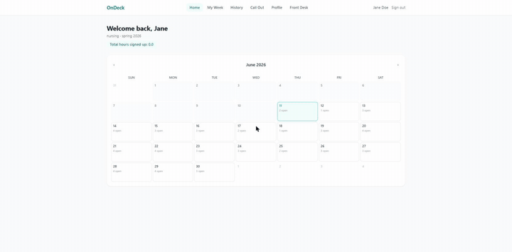

A clinic shift-scheduling platform that runs the front of house where I work. Students book clinic shifts on a weekly calendar — or photograph their printed schedule and let Claude's vision API extract the shift. Admins approve, enforce capacity, track callouts, and run patient intake off a QR code. Real users, real schedules, every day.

DEMO CAPTURE COMING — APP IS LIVE IN PRODUCTION';">THE STUDENT EXPERIENCE — CAPTURED LIVE FROM PRODUCTION WITH A DEMO ACCOUNT
Student clinic shifts lived on printed schedules, texts, and front-desk memory. Double-bookings, overcrowded days, and "I told someone I'd be out" callouts had no system of record.
Two very different user populations: students who need 10-second logins on their phones between patients, and admins who need real accounts, audit trails, and control over capacity rules that change with staffing.
One Next.js app, two auth systems, one source of truth in Postgres. Every booking passes a capacity engine with live-tunable limits, and the highest-friction task — transcribing a printed schedule — became a photo upload.
ARCHITECTURE
STUDENTS
ID + 4-digit PIN → JWT (30d)
ADMINS
Supabase Auth (24h)
NEXT.JS API ROUTES
shifts · approvals · callouts
intake · OCR · settings
SUPABASE
Postgres + RLS + Storage
CLAUDE VISION
schedule photo → JSON
Students sign in with their ID and a 4-digit PIN and get a 30-day
HS256 JWT cookie — fast enough to use between
patients. Admins get real Supabase Auth accounts with 24-hour sessions
and row-level security behind them. Different threat models, different doors.
Every booking checks max_per_day (per student)
and max_concurrent (clinic-wide overlap by clock
hour). Limits live in a settings table admins edit in the UI — staffing
changes don't need a deploy. Edits exclude the shift being replaced so
updating shift A never collides with itself.
Shifts are born pending and an admin approves or
rejects (or flips on auto-approve). Students call out of approved shifts
with a reason and an optional photo — uploaded to Supabase Storage —
so "I texted someone" became an auditable log.
Patients scan a printed QR code and land on a tokenized intake form the front desk opens on demand — the window only accepts submissions when staff arm it. Front-desk notes with pinning round out the desk's toolkit.
DEEP DIVE
The clinic's schedules are printed — sometimes handwritten. The original sin of
most scheduling tools is demanding retyping. OnDeck's answer: photograph it.
The image goes to Claude's vision API with a system prompt that demands strict
JSON — date, times, clinic, notes, plus a confidence
grade (high / medium / low) the UI uses to decide how
loudly to ask the student to double-check.
Two production details do the heavy lifting. The system prompt is deliberately
long and marked with cache_control, so Anthropic's
prompt caching makes retries and same-day uploads dramatically cheaper. And if
no API key is configured, the route returns clearly-labeled demo data instead of
failing — the app deploys and runs without an Anthropic account, and real OCR
switches on the moment a key appears. No code changes.
api/ocr/route.ts — the contract, abridged
// System prompt is stable across requests — mark it for caching. const SYSTEM_PROMPT = `You are an expert clinic schedule parser... Return ONLY a valid JSON object with keys: date, start_time, end_time, clinic, notes, confidence. "high": clear printed text · "medium": partial · "low": blurry/handwritten`; // Demo-mode guard: no key → labeled sample data, never a crash if (!process.env.ANTHROPIC_API_KEY) { return NextResponse.json(DEMO_RESULT); // { ..., demoMode: true } }
// The client renders a banner when demoMode is true — honest about what's real.
AUTH
Students don't have work email and won't do password resets between patients. So student identity is a custom, server-signed JWT — issued after an ID + PIN check, carried in an HTTP-only cookie for 30 days, verified on every API route. What a student token can't do is the design: it never touches Supabase Auth, holds no row-level privileges, and every privileged operation goes through server routes that check the right token type.
export async function signStudentToken(payload) { return new SignJWT({ ...payload }) .setProtectedHeader({ alg: 'HS256' }) .setIssuedAt() .setExpirationTime(`${TOKEN_TTL_DAYS}d`) .sign(getSecret()); } // Verification never throws into the route — missing/invalid → null → 401 export async function getStudentFromRequest(req) { const token = req.cookies.get(COOKIE_NAME)?.value; if (!token) return null; try { return await verifyStudentToken(token); } catch { return null; } }
TRADE-OFFS
The student PIN trades entropy for adoption — the right call for a scheduling tool with no patient data behind student tokens, but it leans on rate limiting and the 30-day cookie. If student accounts ever gain sensitive scopes, this graduates to TOTP or magic links.
The engine counts overlapping shifts, then inserts. Two simultaneous bookings on the last slot could race. Traffic makes it a non-issue today; at scale this becomes a Postgres constraint or an advisory lock, not application code.
Extracted shifts pre-fill the booking form rather than auto-booking, with the confidence grade steering the UI. The next step is feeding corrections back as few-shot examples so accuracy compounds.
In production at Tri Valley Urgent Care — students book and call out, admins approve and tune capacity, and the front desk runs intake off the printed QR code daily. Deployed on Vercel against Supabase, with the OCR pipeline live on Anthropic's API.
The source is private — it's the clinic's working system. For an architecture walkthrough or a guided demo with test data, email me.